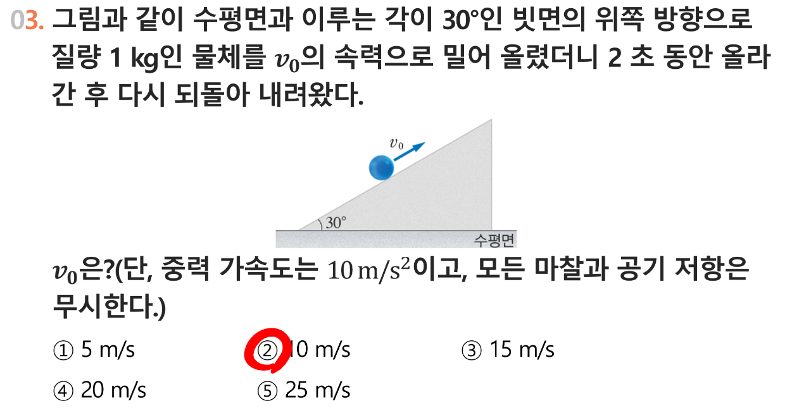

빗면 운동 시뮬레이터 만들기
공부하며 막혔던 지점을 친구들을 위한 학습 도구로 바꾸어 본 과정입니다. 왼쪽 꼬리표는 각 문단이 과정 속에서 맡은 역할입니다.
과정 기록
‘역학과 에너지’ 과목을 공부하면서 포물선 운동에 대해 배웠습니다. 포물선운동을 배울때 제일 힘들었던 점은 교과서의 내용이 전부 그림으로 되어있어서, 움직이는 모습에 대한 이미지를 그리기 어려웠던 것입니다. 선생님이 친절하게 운동방향을 화살표로 그려주어서 문제를 푸는데에는 크게 어려움이 없었는데 직관적으로 이해하는것은 여전히 어려웠습니다.
특히나 물체의 운동을 그래프와 연계하여 이해해야하는 경우에는 물체의 움직임에 맞추어, 그래프의 변화를 상상해야하는데 개념을 완벽히 이해하지 못한 상태에서는 많이 어려웠습니다.
저는 친구들이 포물선 운동을 직관적으로 이해할 수 있도록, 포물선 운동이 애니메이션으로 나오도록 하면서도 그 운동을 설명하는 다양한 요소의 변화를 눈으로 확인할 수 있게 시뮬레이션을 할 수 있는 사이트를 만들어보려고 합니다.
포물선 운동에서 중요한것은 위치에너지와 운동에너지의 합이 역학적에너지라는 것입니다. 그래서 위치에너지와 운동에너지의 변화를 나타내는 상태창을 만들 것입니다.
그다음 시뮬레이션을 위한 상황을 하나 가정할 것 입니다.
예를 들어 아래 문제에 대한 시뮬레이션을 만들어 볼 수 있습니다.

개념을 잘 아는 학생에게는 이문제가 계산문제에 불과하겠지만, 개념을 잘 모르는 학생에게는 아는것과 모르는것이 섞여있는 애매한 문제가 됩니다. 모든 문제는 풀거나, 틀리거나 둘중에 하나입니다. 하지만, 문제를 통해서 개념을 이해할 수 있다면, 문제도 좋은 학습재료가 됩니다.
저 문제에서 바꿀 수 있는 수치는 30도, 공의 질량, v_o, 올라간 시간입니다. 중력 가속도도 변하게 할 수는 있습니다. 저 수치들이 바뀌었을때 v_0가 어떻게 바뀌는지 알아내기 위해서는 v_0를 구하는 계산식을 구성해야합니다. V_0를 구하는 계산과정을 단계별로 나타내면 됩니다.
사이트를 이용하는 사람들은 V_0를 바꿀 수 있도, 질량을 바꿀 수도 있습니다. 각 변수를 설정한 후에 ‘출발’버튼을 누르면 공이 올라갔다가 내려오는 애니메이션이 만들어집니다. 이 애니메이션 하나만으로도 학생들의 직관적 이해를 돕기에는 충분합니다.
위 시뮬레이션에서 더 나아가 그래프와 연계할 수 있습니다. 보통 속도/거리 그래프를 활용합니다. 위 문제에서는 공의 속도와 공의 이동거리가 시간에 따라 변하게 됩니다. 이렇게 문제에서 제시하지 않은 것 까지 확인하면서 학습할 수 있게 됩니다.
친구에게 이 사이트를 보여주면서 다양한 조작을 거친 결과 공이 움직이는 모습을 보면서 변화를 느낄 수 있는 것은 좋았는데, 반대로 내가 원하는 순간의 상태를 확인하기 어려운것 같다는 피드백이 있었습니다. 그래서 시간을 나타내는 슬라이드를 만들어서 그 순간의 공의 위치와 각 변수를 볼 수 있도록 하였습니다.
최종적으로 만들어진 홈페이지는 세가지 문제점이 있었습니다. 첫번째는 글자크기가 너무 작아서 보기 힘들다는 것이었고, 두번째는 시작버튼과 공이 움직이는 애니메이션의 위치가 떨어져있어, 시작버튼을 누르자마자 바로 스크롤를 내려야 하는 것이었습니다. 그리고 ‘이동거리’를 나타내는 그래프는 변위에 해당하는 그래프였습니다.
결과물: 빗면 운동 시뮬레이터 (1차)
위 글에서 만든 실제 웹페이지입니다. 조건을 바꾸고 ▶ 출발을 눌러 보고, 시간 슬라이더도 움직여 보세요.
직접 확인해 보세요: 글에 적힌 세 가지 문제점
이 결과물은 일부러 고치지 않은 1차 버전입니다. 성찰 문단에 적힌 문제를 실제로 찾아보세요.
- 글자 크기가 작다휴대폰으로 열었을 때 특히 잘 드러납니다.
- 출발 버튼과 애니메이션이 떨어져 있다‘① 조건 설정’의 버튼을 누른 뒤, ‘③ 시뮬레이션’을 보려면 스크롤을 내려야 합니다.
- ‘이동거리’ 그래프가 사실은 변위 그래프다공이 최고점에서 되돌아 내려올 때 그래프가 다시 0으로 줄어듭니다. 이동거리라면 어떻게 그려져야 할까요?
이 예시에서 눈여겨볼 점
- ‘만들고 싶은 것’보다 ‘내가 어려웠던 것’에서 출발해, 결과물이 왜 필요한지가 분명합니다.
- 교과 개념(역학적 에너지)이 구체적인 기능(에너지 상태창)으로 이어집니다.
- 어떤 값을 바꿀 수 있게 할지, 그때 무엇을 계산해야 하는지 설계 과정이 드러납니다.
- 다른 사람의 피드백을 받아 기능을 추가한 과정이 기록되어 있습니다.
- 완성했다고 끝내지 않고, 남은 문제점을 구체적으로 적었습니다. 개념 오류(이동거리 ↔ 변위)까지 스스로 찾아냈습니다.